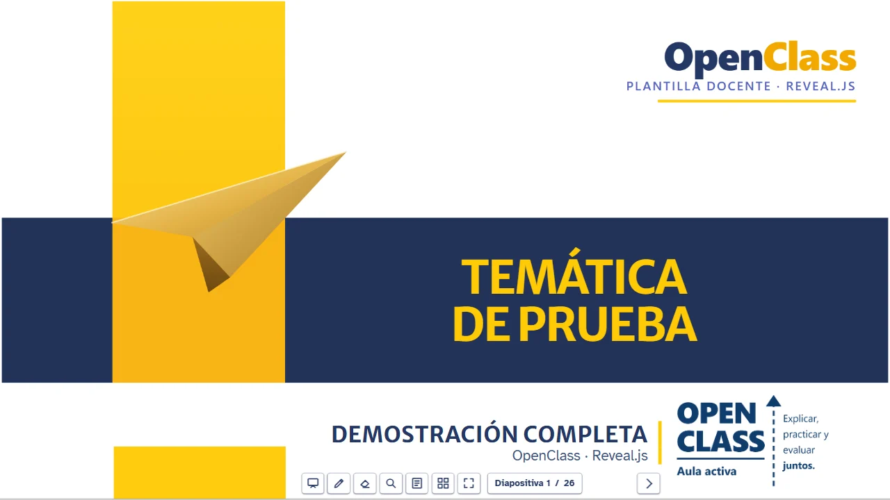
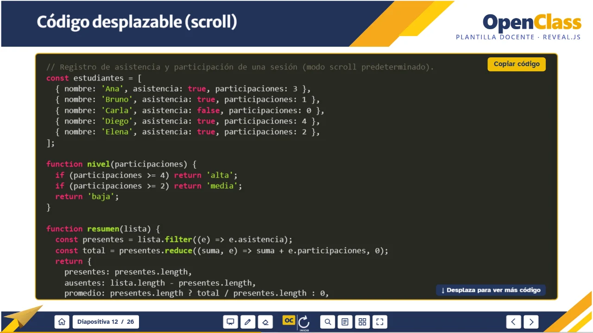
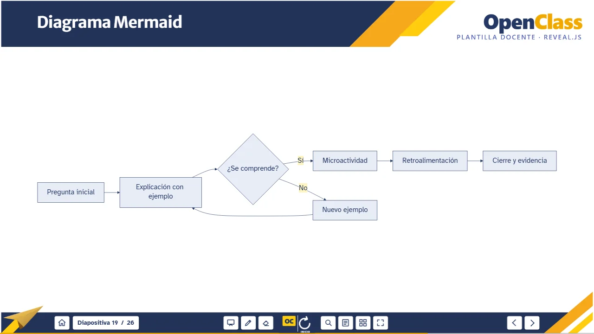
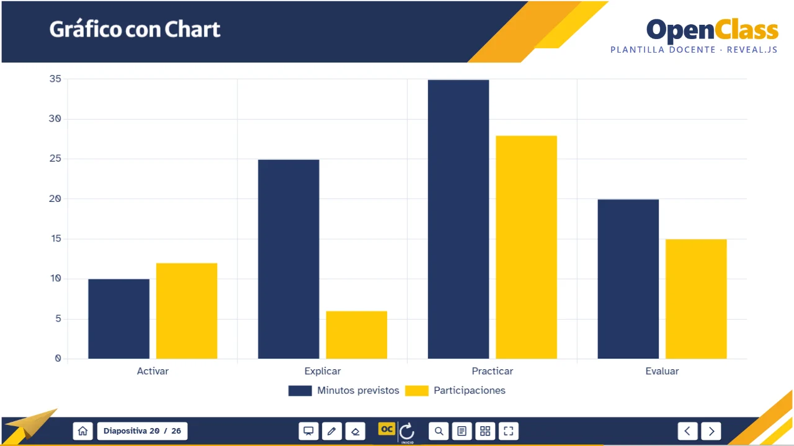
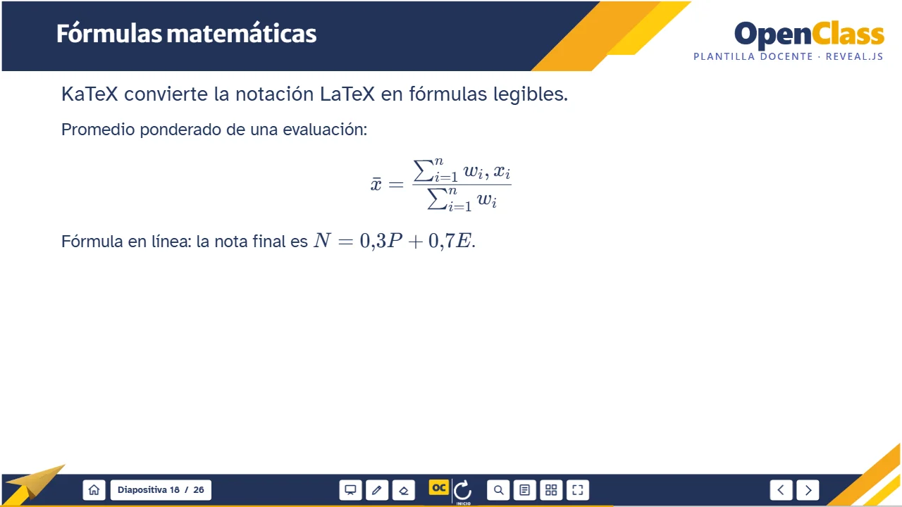
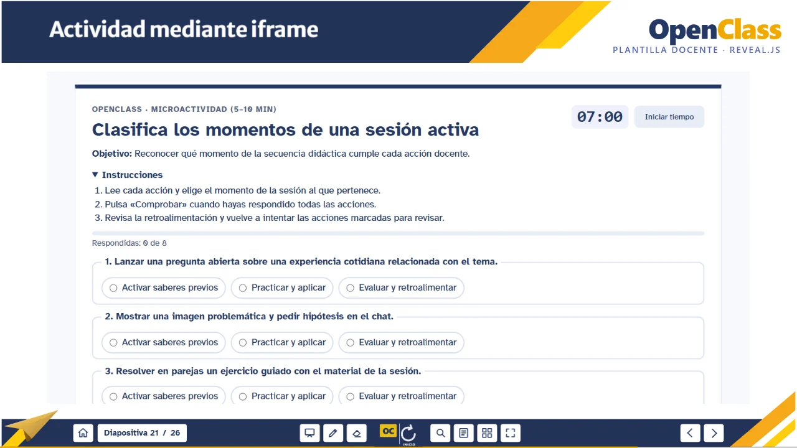

13 layouts
Portada, separador, resultados, imágenes, texto, columnas, comparación, multimedia, código y cierre, con vista previa real.
OpenClass UNIMINUTO · Reveal.js
Un comando de npm crea un curso completo: portal, ocho semanas, 13 layouts con identidad visual, código con scroll, diagramas, gráficos, fórmulas, actividades y una guía del docente. Sin saber React.

Proyecto docente independiente de código abierto. No es un sitio oficial de UNIMINUTO. El paquete público usa un tema neutro: los logotipos institucionales no se distribuyen y cada docente autorizado los aplica en su equipo con --assets.
Portada, separador, resultados, imágenes, texto, columnas, comparación, multimedia, código y cierre, con vista previa real.
Programas extensos con scroll vertical y horizontal, botón copiar y teclado seguro; o paginados para PDF.
Mermaid, Chart.js y fórmulas KaTeX escritas como texto, sin capturas de baja resolución.
Microactividad editable con validación y retroalimentación, quiz y laboratorio dentro de la presentación.
Vista del presentador con notas, pizarra, anotaciones, búsqueda, vista general y exportación a PDF.
Compila a HTML/CSS/JS y se publica en GitHub Pages con el flujo de trabajo incluido.




Requiere Node.js 20.19 o posterior. El curso se crea en tu equipo; esta página solo documenta y muestra la demostración.
npm create openclass-uniminuto-revealjs@latest mi-curso
cd mi-curso
npm install
npm run devDocentes con autorización para los recursos institucionales:
npm create openclass-uniminuto-revealjs@latest mi-curso -- --assets "RUTA/recursos-institucionales"Paquete: {{NPM}}
Capturas reales de la demostración. Copia el Markdown de cualquier layout y pégalo en tu semana. Ficha completa en la galería.
Una microactividad de 5 a 10 minutos funciona dentro de la diapositiva: los estudiantes clasifican acciones, comprueban, leen la retroalimentación y reintentan.
datos.js.
Cada curso trae tres archivos en docs/IA/ para que ChatGPT, Claude o Codex produzcan Markdown compatible, sin inventar clases, enlaces ni bibliografía.
INSTRUCCIONES-OPENCLASS.md: contrato técnico con la arquitectura, los 13 layouts y las reglas de validación.
PLANTILLA-SEMANAL.md: curso, tema, resultados, materiales, actividades y evaluación (admite datos parciales).
PROMPT-CREAR-SEMANA.md: secuencia pedagógica, microactividad, evaluación formativa y reporte de pendientes.